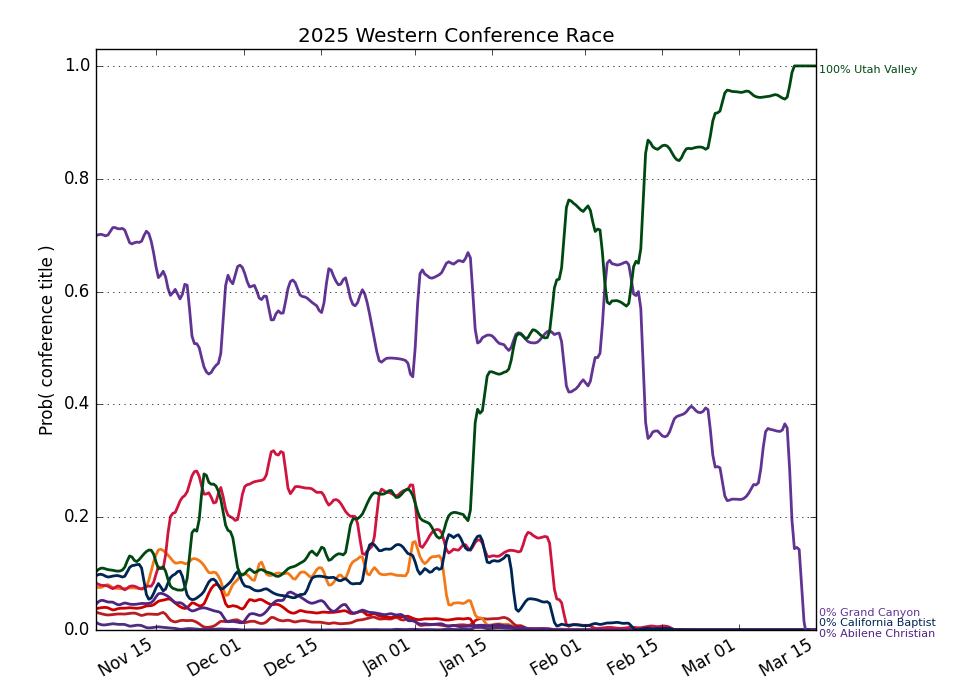

Western
Updated with games through Friday, January 09
Conference Projections
Based on 10,000 simulations of the remaining season.
Tiebreaking was done using the
Big Ten tiebreaking procedures.
| Western |
Current Record |
Projected Record |
Projected Finish (% odds, with tiebreakers) |
|
Team |
Conf. |
Overall |
Conf. |
Overall |
1st | 2nd | 3rd | 4th | 5th | 6th | 7th |
| 1. |
Utah Valley (92) |
3 - 1 |
10 - 4 |
13.4 - 4.6 |
20.4 - 7.6 |
71.9 | 17.7 | 6.4 | 2.7 | 0.9 | 0.3 | |
| 2. |
California Baptist (120) |
1 - 3 |
11 - 6 |
10.6 - 7.4 |
20.6 - 10.4 |
9.0 | 27.9 | 26.9 | 19.3 | 11.1 | 5.7 | 0.0 |
| 3. |
UT Arlington (133) |
2 - 1 |
8 - 5 |
10.4 - 7.6 |
16.4 - 11.6 |
11.3 | 24.4 | 21.9 | 18.5 | 14.5 | 9.4 | 0.0 |
| 4. |
Tarleton St. (156) |
2 - 2 |
7 - 6 |
9.6 - 8.4 |
14.6 - 12.4 |
4.3 | 16.0 | 20.9 | 23.4 | 19.9 | 15.3 | 0.2 |
| 5. |
Abilene Christian (208) |
2 - 1 |
7 - 6 |
8.5 - 9.5 |
13.5 - 14.5 |
1.4 | 7.0 | 12.1 | 17.7 | 26.7 | 34.3 | 0.7 |
| 6. |
Utah Tech (197) |
2 - 1 |
6 - 8 |
8.4 - 9.6 |
12.4 - 16.6 |
2.1 | 7.0 | 11.8 | 18.3 | 26.7 | 33.5 | 0.7 |
| 7. |
Southern Utah (344) |
0 - 3 |
1 - 12 |
2.0 - 16.0 |
3.0 - 25.0 |
| | | 0.1 | 0.2 | 1.5 | 98.3 |
Weekly Changes |
| 1. |
Utah Valley (92) |
|
-14.7 | +7.9 | +3.9 | +1.9 | +0.7 | +0.3 | +0.0 |
| 2. |
California Baptist (120) |
|
+3.6 | -7.7 | +0.3 | -0.3 | +1.0 | +3.1 | -0.0 |
| 3. |
UT Arlington (133) |
|
+7.2 | +2.4 | -3.4 | -7.2 | -2.4 | +3.6 | -0.2 |
| 4. |
Tarleton St. (156) |
|
+1.4 | -8.5 | -7.9 | -1.3 | +4.9 | +11.3 | +0.1 |
| 5. |
Abilene Christian (208) |
|
+1.4 | +6.2 | +9.9 | +11.4 | +9.0 | -30.9 | -7.0 |
| 6. |
Utah Tech (197) |
|
+1.2 | -0.3 | -2.8 | -4.3 | -12.8 | +19.0 | +0.1 |
| 7. |
Southern Utah (344) |
|
+0.0 | +0.0 | -0.0 | -0.1 | -0.5 | -6.5 | +7.0 |
This table gives the probability of earning at least a share of a given place.
So there are no tiebreakers and there can be multiple first place teams, for example.
